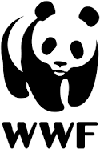
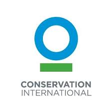

Conservation areas are specific areas set by the government or an agency in order to protect certain species of animals
and plants which may otherwise be extinct. These are especially important nowadays because of unnecessary destruction
of habitats which has even led to extinction of certain species of plants and animals. This has become an serious issue
and construction of protected areas can be the only key to prevent this disaster.